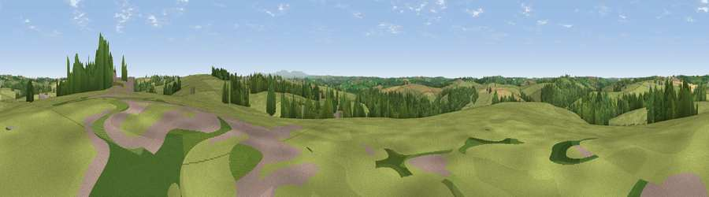

Viewpoint near Shebbear
#28908 in England · top 67% of its area beats it · near ShebbearWhere it is
The exact computed spot (SS 42825 10425). Click the marker for map links.
The view, rendered

A 360° render of this exact spot computed from the terrain model, tree cover and land cover — summer colours, afternoon light, calibrated against photographs of famous viewpoints. Real trees, hedges and buildings will differ in detail.
The panorama
Grey silhouette: terrain skyline in each direction (720 bearings, Earth curvature and refraction included). Dashed green: skyline with trees (+15 m) and buildings (+8 m) as obstacles. Blue strip: how far the ground is visible on each bearing.
Where the view opens
Wedge length = distance to the farthest visible ground on that bearing (vegetation-aware). Rings at 10, 25 and 50 km.
What fills the view
74% grassland · 18% woodland · 7% cropland · 1% built-up
Angular shares of the visible panorama (visual magnitude), not map area. Landscape diversity 0.33 (0–1 Shannon).
Key numbers
More beautiful places nearby
The staircase of upgrades: each row has a higher view potential than everything closer. Driving times are estimates from straight-line distance, calibrated against real road routing — check an actual route before setting out.
| Place | Direction | Drive | Score |
|---|---|---|---|
| Viewpoint near Shebbear | E · 1 km | ~3 min | 48.3 |
| Viewpoint near Newton St Petrock | WNW · 3 km | ~7 min | 49.7 |
| Cudemoor | NE · 6 km | ~12 min | 58.5 |
| Viewpoint near Petrockstowe | ESE · 6 km | ~13 min | 59.2 |
| Viewpoint near Petrockstowe | E · 7 km | ~14 min | 65.5 |
| Viewpoint near Buckland Brewer | NNW · 11 km | ~21 min | 66.6 |
| Viewpoint near Littleham | N · 13 km | ~24 min | 68.1 |
| Viewpoint near Parkham | NNW · 14 km | ~25 min | 69.2 |
50.87190, -4.23520 · source: screening · position refined by local search. Computed location — check access rights before visiting.